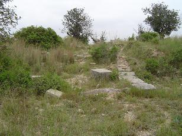
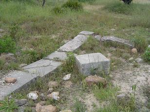
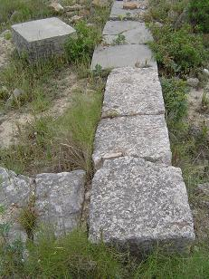
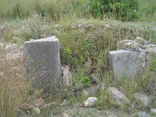

|
PALLANTIA
VALENCIA LA VELLA
Valencia la vieja es un conjunto arqueológico,
localizado en el término de Ribarroja (Valencia), estos restos constituyen
una ciudad o un campamento romano. Tradicionalmente se ha relacionado con
las guerras entre Pompeyo y Sertorio, pero no hay pruebas arqueológicas
que lo corroboren.
|
Los restos se hallan en un cerro que lo aísla el barranco de Cabrasa o
dels Pous y el río Turia. Se halla a una altura de 40m del río.
La primera excavación fue realizada en 1952 por Domingo Fletcher, pero
anteriormente en 1927 el Centro de Cultura Valenciana realizó un estudio
sobre Valencia la Vella. También se la conoce con el término de Pallantia,
Pallantia Edetanorum, los edetanos de Pallantia. El texto más antiguo que
hace referencia a las ruinas de Pallantia es de 1612. En él su autor
describe el estado ruinoso de una fortificación romana. Se supone que los
agricultores destrozaron parte de la ciudad para utilizar sus piedras como
lindes de caminos o para aterrar el terreno.
En 1978, apareció una lápida junto a unos restos de sillares, todo
indicaba que podía ser un monumento funerario. Restos humanos han
aparecido en el recinto de Pallantia y en sus alrededores. En 1977 se
planifico la primera excavación. Del interior del recinto amurallado
se extrajeron toneladas de tierra y decenas de sillares romanos para
realizar un paso elevado sobre la vía del tren. |
 |
|
 |
La ciudad tenía una superficie
de tres hectáreas. En la excavación se realizaron seis catas,
descubriendo los cimientos de una gran edificación de unos 15x7 m.
podría ser una basílica paleocristiana.
La segunda excavación se realizo en 1979. Se encuentran más restos
del edificio hallado en la primera campaña, pero el estado y el
expolio al que se vio sometido este edificio hace muy difícil su
estudio. Pese a excavar 1,20m no se llego al nivel arqueológicamente
estéril.
En base a los restos aparecidos, carbón, restos cerámicos, huesos,
pavimento, cenizas; parece que era una cocina. En esta época también
se excavó el llamado campo negro y se hallaron restos cerámicos, y
una vasija ahumada.
En 1980 se realizó la tercera campaña, llegando a demostrar que el
edificio hallado en la primera actuación tenía un largo de 25 m. y
estaba dividido en una serie de habitaciones. En esta campaña se
hallaron restos cerámicos, tejas y ladrillos de colores. Confirmando
el origen tardorromano del edificio. |
|
 |
 |
 |
Algunos arqueólogos suponen que Pallantia era una
ciudad importante, con mucha densidad de habitantes y son las ruinas de la
ciudad que Ptolomeo llamó Etobesa o Etobesca y Tito Livio Etovisa. A lo
largo de varios periodos se ha habitado y rehabilitado la ciudad. El
edificio hallado no tenia fines religiosos, parece más correcto que
tuviera un uso domestico, de almacenamiento o que tuviera relación con la
red de acueductos. Pudo ser un campamento de invierno donde descansarían
las tropas, una ciudad con puerto fluvial para llevar a Valentia las
mercancías y de esta a Roma. No se sabe, es el secreto de Valencia la
Vella, Pallantia. Han aparecido dos lápidas, pavimento romboidal, cerámica
sigilata, pesas de telar, fragmentos de ánforas, tejas, una imposta de un
arco, un ara votiva, placa con inscripción consagrada al Dios Manes y
atributos dionisiacos.
Otros arqueólogos datan el castro o ciudad en
época visigoda. Por la técnicas y características constructivas, en la
postrimerías del siglo VI.
(Ribarroja del Turia. A través de su historia I. de José Luis de Tomás)
Más
información y visitas programadas:
Tourist Info Riba-roja del Túria
Dirección: C/Cisterna, 30.
Teléfono y Fax: 96 277 21 84.
E-mail:
riba_roja@touristinfo.net
|